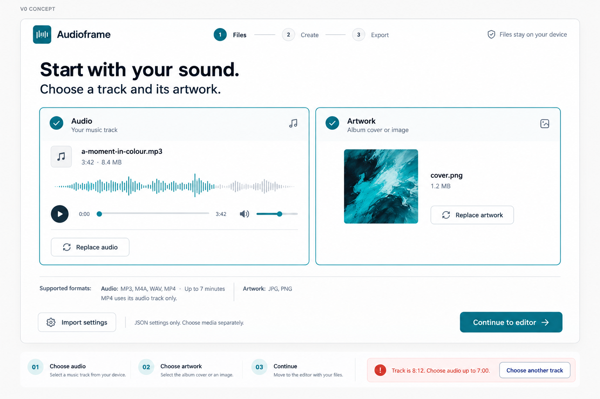
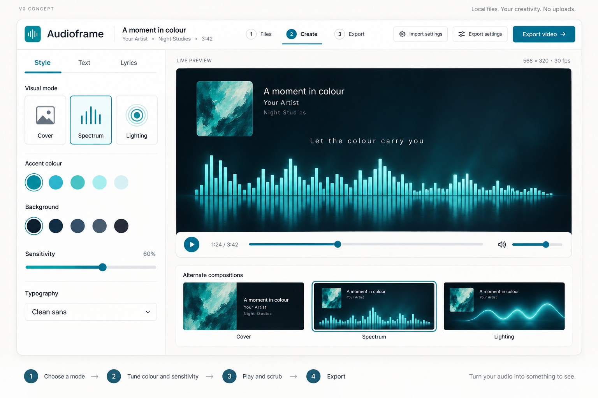
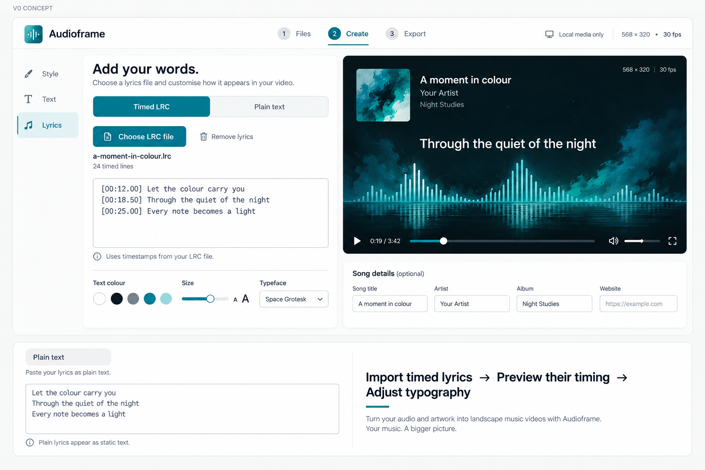
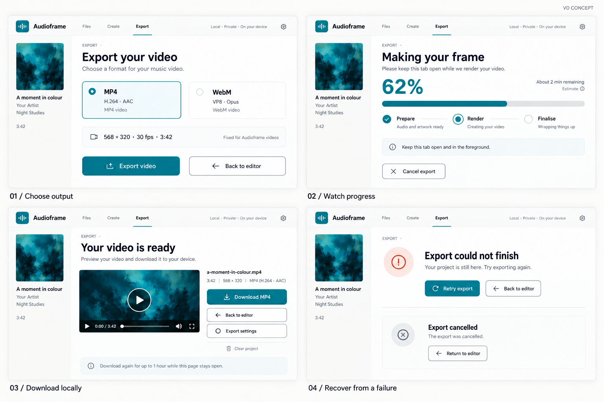
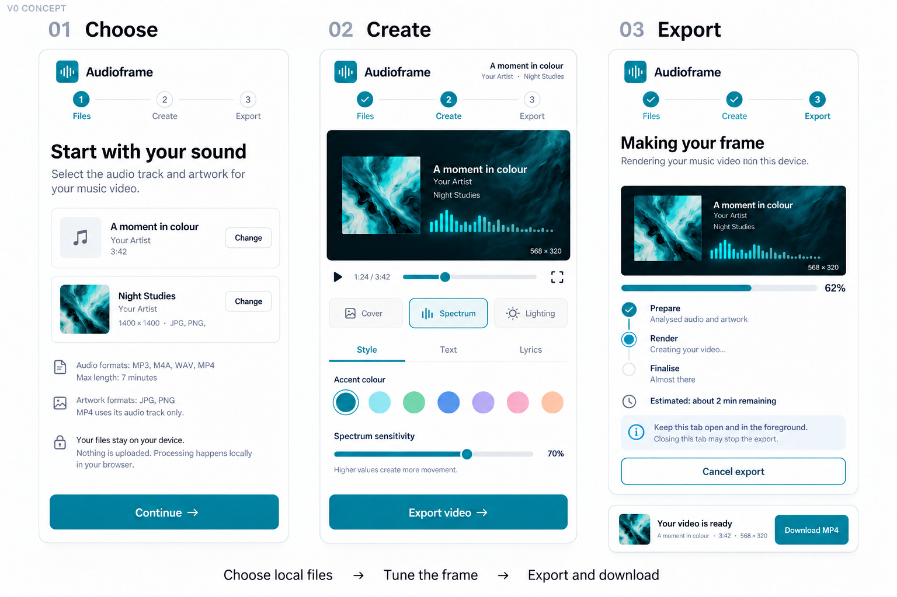

01 · Select files
Choose or replace audio and artwork, preview the track, import settings, and resolve an overlong track. Open full image


Five concept boards grounded in the project’s product decisions, media architecture, existing demos, and white-and-teal visual language.
MP3, M4A, WAV, or audio from MP4, up to seven minutes; JPG/PNG artwork; optional title, artist, album, website, and timed LRC or plain lyrics. Versioned JSON presets contain settings, not media.
Validate the files, compose Cover/Spectrum/Lighting, customise and preview with Canvas, then encode locally with FFmpeg.wasm. One active export; preparation, rendering, finalisation, approximate progress, and cancellation.
Landscape 568 × 320 at 30 fps with audio: MP4 (H.264/AAC) or WebM (VP8/Opus), downloaded locally. Repeat downloads until Clear project, page closure, or best-effort cleanup one hour after generation.
Concepts, not implemented screenshots. Current source includes the landing page, cover PNG composer, audio-reactive visualisation demos, and shared FFmpeg wrapper. The unified editor, lyrics integration, complete video export, and device release checks remain planned. Example export times and progress are illustrative.
Choose or replace audio and artwork, preview the track, import settings, and resolve an overlong track. Open full image

Switch Cover, Spectrum, or Lighting; adjust colour, background, sensitivity, and typography; play and scrub. Open full image

Add song details, load supplied LRC timestamps or plain static lyrics, and preview the composition. Open full image

Choose MP4 or WebM, track preparation/render/finalisation, cancel, retry, preview, and download locally. Open full image

Use stacked file cards, a preview-first editor, touch controls, export progress, and local download. Open full image
